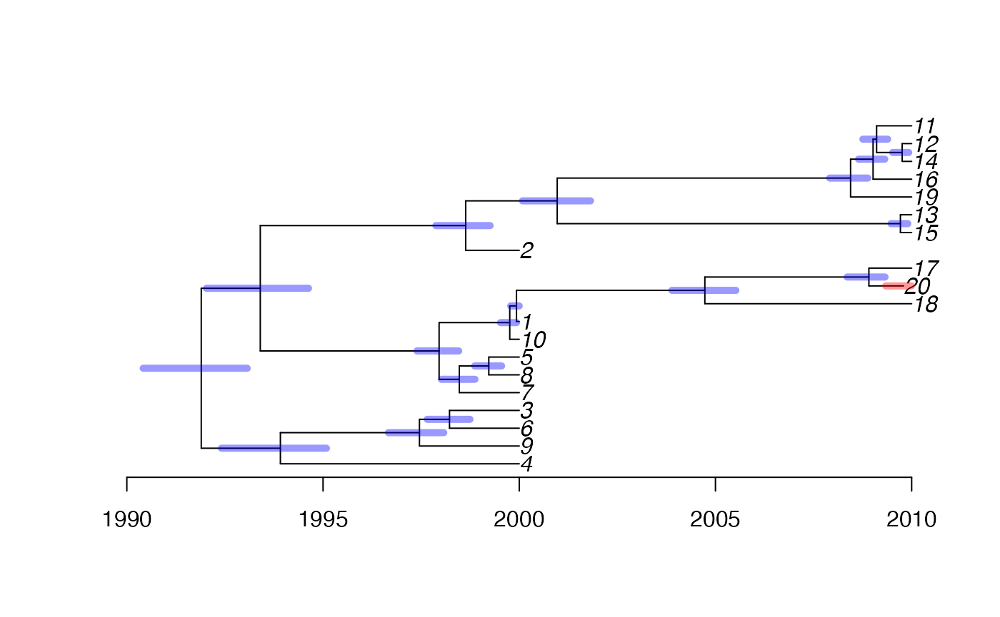

Using BactDating to test significance of the temporal signal
Xavier Didelot
2019-09-20
Source:vignettes/exampleTest.Rmd
exampleTest.RmdData
We start by generating a coalescent tree with 10 leaves sampled in 2000, 10 leaves sampled in 2010, and a coalescent time unit of 10 years:
dates=c(rep(2000,10),rep(2010,10))
phy=simcoaltree(dates,alpha=10)
plot(phy,show.tip.label = F)
axisPhylo(backward = F)
On each branch we observe a number of substitutions which is distributed \(\mathrm{Gamma}(rl,1)\) where \(l\) is the branch length and \(r=10\) per year is the substitution rate. We can simulate an observed phylogenetic tree and perform a root-to-tip analysis as follows:

Let’s consider that we do not know where is the root of the observed phylogeny, and that the date of the last sample has been lost:
First analysis
We run the dating analysis as follows:

Let’s see what the result looks like:

Let’s see where the root was inferred:
Testing significance of clock signal
We run the algorithm again, with all sampling dates forced equal, and compare the fit of the two runs in order to assess the statistical significance of the temporal signal:
## The first model has DIC=215.44 and the second model has DIC=317.42.
## Model 1 is definitely better.Since the first model is found to be better, we conclude that the temporal signal is significant.